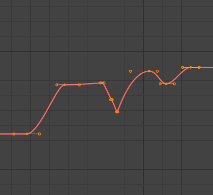
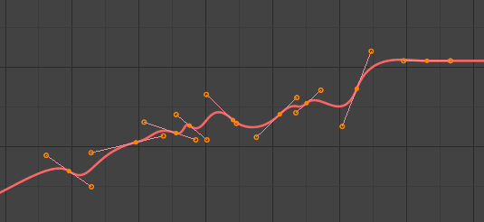

编辑¶
变换¶
参考
- 模式
编辑模式
- 菜单
An F-curve can be edited by transforming the locations of the keyframes.
- 移动，旋转，缩放
与 Blender 中的其他元素一样，关键帧可以如同 基础变换 中描述的一样移动、旋转或缩放。
- 扩选
Moves keyframes relative to the Playhead. If the mouse is to the left of the Playhead, this operator only affects the selected keyframes that are to the left of the Playhead. On the contrary, if the mouse is to the right of the Playhead, this operator only affects the selected keyframes that are to the right of the Playhead.
Tip
要精确控制关键帧的位置和值，可以在侧栏的 活动关键帧 中设置值。
吸附¶
参考
- 菜单
- 快捷键
Shift-S
通过使用 吸附关键帧 工具，可以将关键帧吸附到不同的属性。
- 选中项到当前帧
Snap the selected keyframes to the Playhead.
- 选中项到游标值
将所选关键帧吸附到 2D游标 。
- 选中项到最近帧
将所选关键帧分别吸附到最近的帧。
- 选中项到最近秒
基于场景的 帧速率，将所选关键帧分别吸附到最近的秒。
- 选中项到最近标记
将所选关键分别吸附到最近的标记。
- 展平控制柄
展平所选关键帧的 贝塞尔 控制柄。
展平控制柄吸附示例。¶ 
展平控制柄之前。¶
展平控制柄之后。¶
- 游标到选中项 Ctrl-G
将游标放在所选关键帧的中点。
- 游标值到选中项
将游标值放在所选关键帧的平均值上。
镜像¶
参考
- 菜单
- 快捷键
Ctrl-M
使用 镜像关键帧 工具可以将选定的关键帧镜像到不同的属性上。
- 沿时间轴关于当前帧
Mirror horizontally over the playhead.
- 沿值轴关于游标值
在 2D 光标上垂直镜像。
- 沿时间轴关于时间0
水平镜像到第0帧的另一侧。
- 按超出0的值
垂直镜像到横轴另一侧。
- 沿时间轴关于第一个选中标记
水平镜像到第一个选定的 标记的另一侧。
Insert Keyframes¶
参考
- 菜单
- 快捷键
Ctrl-RMB, Shift-Ctrl-RMB
Inserts a keyframe to the active F-curve at the mouse position. The newly added keyframes will be selected, making it easier to quickly tweak the newly added keyframes. All previously selected keyframes are kept selected by using Shift-Ctrl-RMB.
添加函数曲线修改器¶
参考
- 菜单
- 快捷键
Shift-Ctrl-M
Opens a pop-up allowing you to add modifiers to the active F-curve. Settings for the modifier can be found in the tab.
将声音烘焙成函数曲线¶
参考
- 菜单
将声音烘焙成函数曲线 工具需要一个声音文件并使用其声波创建动画数据。
- 最低频率
应用于音频数据的高通滤波器的截止频率。
- 最高频率
应用于音频数据的低通滤波器的截止频率。
- 起音时间
Attack time，边界曲线计算值指示边界曲线可以上升的速度。值越低，它可以上升越陡峭。
- 释音时间
Release time，边界曲线计算的值，表示边界曲线可以下降的速度。值越低，越容易下降。
- 阈值
影响边界曲线所需的最小振幅值。
- 累积
只有边界曲线振幅的正差异被摘要出来才能产生输出。
- 添加
总结了边界曲线的振幅。如果启用 累计，则累计正负差异。
- 正方形
将输出显示为方波曲线。负值始终为-1，正值为1。
- 平方阈值
所有低于此阈值的值都会导致0。
复制/粘贴¶
参考
- 菜单
,
- 快捷键
Ctrl-C, Ctrl-V
使用 Ctrl-C 复制选定的关键帧，使用 Ctrl-V 粘贴以前复制的关键帧。在粘贴操作期间， 调整上一步操作 面板提供了一些有关如何应用粘贴的选项。
- 偏移量
- 无偏移
粘贴关键帧到原来复制的位置。
- 相对帧
Pastes the keyframe relative to the Playhead position based on the locations of the keyframes relative to the Playhead when they were copied.
- 起始帧
Pastes the keyframes with the first keyframe of the copied set placed at the Playhead.
- 结束帧
Pastes the keyframes with the last keyframe of the copied set placed at the Playhead.
- 类型
- 混合
将粘贴的关键帧与现有关键帧集成在一起，仅覆盖共享一个帧的关键帧。
- 覆盖所有
删除所有先前的关键帧，并将其替换为粘贴的关键帧。
- 覆盖范围
覆盖整个范围
- 覆盖整个范围
使用所有复制的密钥的范围覆盖粘贴范围内的密钥。
- 翻转
粘贴镜像骨骼中的关键帧（如果存在）。
精简¶
参考
- 菜单
- 菜单
The Decimate tool simplifies an F-curve by removing keyframes that influence the curve shape the least.
- 模式
使用哪种方法选取要使用的关键帧数。
- 比率
删除定义比例的关键帧，要删除的关键帧数量由 删除 属性定义。
- 边际误差
Deletes keyframes which only allowing the F-curve to change by a defined amount. The amount of change is controlled by the Max Error Margin which controls how much the new decimated curve is allowed to deviate from the original.
Clean Channels¶
参考
- 菜单
- 快捷键
X
Acts like the Clean Keyframes tool but will also delete the channel itself if it is only left with a single keyframe containing the default property value and it's not being used by any generative F-curve modifiers or drivers.
Note
The modified curve left after the Clean tool is run is not the same as the original, so this tool is better used before doing custom editing of F-curves and after initial keyframe insertion, to get rid of any unwanted keyframes inserted while doing mass keyframe insertion (by selecting all bones and pressing I for instance).
Smooth Keys¶
参考
- 菜单
- 快捷键
Alt-O
还有一个选项可以平滑选定的曲线，但要注意：它的算法似乎是将每个关键帧之间的距离和曲线的平均线性值除以2，而不进行任何设置，这样可以提供相当强的平滑效果！ 请注意，此工具似乎永远不会修改第一个和最后一个键。

平滑前的函数曲线。¶ |

平滑后的函数曲线。¶ |


不连续项（欧拉）过滤器¶
待补充。